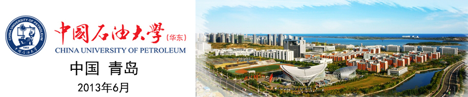

2013年"浪潮杯"山东省第四届ACM大学生程序设计竞赛排名
 | 1 | 山东大学 | Plaisant | 1 | 1 | 9 | 1107 | 11 | 94 | 224 | (-7) | 139
(-1) | 41 | 195 | 63 | 79 | 121
(-2) |
 | | 山东大学 | ThreeMusketeers | 2 | 2 | 7 | 977 | 19 | 122
(-3) | (-7) | (-1) | 92
(-2) | 55 | | 204
(-2) | 164
(-1) | 141
(-1) |
| * | 山东大学 | *Surpise | | 3 | 7 | 1166 | 9 | 202 | (-3) | | 262
(-3) | 98
(-1) | | 136
(-1) | 157 | 162
(-2) |
| 2 | 中国石油大学 | <·)#)))≦ | 3 | 4 | 7 | 1200 | 13 | 119 | | | 180 | 27 | | 286
(-2) | 79 | 296
(-8) |
| 3 | 山东理工大学 | Dumbledore | 4 | 5 | 7 | 1416 | 118
(-1) | 259 | (-3) | | 60 | 143 | | 245 | 193 | 278
(-5) |
| * | 油田一中 | *playing_cute | | 6 | 6 | 809 | 22 | 150
(-3) | (-3) | | 85 | 109 | | (-7) | 244 | 139 |
| * | 青岛二中 | *QDEZ's_Team | | 7 | 5 | 667 | 23
(-1) | (-1) | (-2) | | 179 | 65 | | 232 | 148 | (-8) |
| 4 | 山东科技大学 | King_Arthur | 5 | 8 | 5 | 685 | 31 | 200
(-1) | (-4) | | | 100 | | (-3) | 247 | 67 |
| | 山东科技大学 | Sir_Gawaine | 6 | 9 | 5 | 954 | 29 | 294
(-3) | (-1) | | | 146
(-4) | | | 234 | 91
(-1) |
| 5 | 中国海洋大学 | OUC_Balabala | 7 | 10 | 5 | 979 | 116 | 255
(-7) | (-2) | | 156 | 87
(-2) | | | 185 | (-10) |
| | 中国石油大学 | Up_Up_C | 8 | 11 | 5 | 987 | 19 | 205
(-1) | | | | 104
(-2) | | (-3) | 162 | 277
(-8) |
| * | 山东大学 | *WCG | | 12 | 4 | 410 | 27
(-1) | 65 | (-2) | | (-1) | 52
(-1) | | | 186
(-2) | (-5) |
| 6 | 哈尔滨工业大学（威海） | HIT@WH_LOCUS | 9 | 13 | 4 | 467 | 41 | 197 | | | (-4) | 67
(-1) | | | 142 | (-9) |
| 7 | 山东农业大学 | Spectre | 10 | 14 | 4 | 470 | 58
(-2) | 163 | | | (-4) | 113
(-2) | | (-7) | 56 | (-3) |
| 8 | 山东大学（威海） | Seal | 11 | 15 | 4 | 636 | 99 | 251
(-1) | (-1) | | 142 | 84
(-2) | | | | (-4) |
| 9 | 山东师范大学 | SDNU_Excalibur | 12 | 16 | 4 | 828 | 51 | (-5) | | | | 136
(-1) | | | 276 | 205
(-7) |
| | 山东理工大学 | QinchuanMM | 13 | 17 | 4 | 894 | 32 | | (-2) | | | 145
(-2) | | | 288 | 269
(-6) |
| * | 山东科技大学 | *Bedivere | | 18 | 4 | 935 | 167 | | | (-3) | | 221 | | (-1) | 282 | 245
(-1) |
| 10 | 青岛理工大学 | Open_Wisdom | 14 | 19 | 4 | 995 | 208
(-2) | | | | | 79
(-1) | | (-1) | 257 | 291
(-5) |
| 11 | 山东工商学院 | 3B_Pencil | 15 | 20 | 3 | 316 | 14 | (-7) | | | | 102
(-2) | | (-3) | | 140
(-1) |
| | 山东大学 | dracula | 16 | 21 | 3 | 336 | 18 | 214 | | | (-3) | 84
(-1) | | | (-2) | (-10) |
| | 山东科技大学 | Sir_Lancelot_du_Lac | 17 | 22 | 3 | 337 | 46 | (-3) | (-3) | | 232 | 59 | | | | (-8) |
| 12 | 济南大学 | 我的前辈怎么都这么强 | 18 | 23 | 3 | 384 | 67 | | | | | 171
(-1) | | | | 126 |
| * | 中国石油大学 | *I_don't_know | | 24 | 3 | 548 | 47 | | | | | 142
(-2) | | | | 239
(-4) |
| | 青岛理工大学 | bug_maker | 19 | 25 | 3 | 551 | 60 | (-3) | (-2) | | | 99 | | | | 272
(-6) |
| | 哈尔滨工业大学（威海） | HIT@WH_PureBaby | 20 | 26 | 3 | 553 | 64 | (-2) | | | | 193
(-2) | | | | 256 |
| * | 山东大学 | *AcProject | | 27 | 3 | 561 | 54
(-3) | | | | (-1) | 90
(-2) | | | (-2) | 277
(-2) |
| | 中国石油大学 | const_heart_*ours=&AC | 21 | 28 | 3 | 609 | 190
(-5) | 103
(-3) | | | | 136
(-1) | | | (-1) | (-4) |
| | 山东师范大学 | SDNU_Ultimate | 22 | 29 | 3 | 685 | 61 | | (-1) | | | 132
(-4) | | | | 272
(-7) |
| | 中国海洋大学 | OUC_Genesis | 23 | 30 | 3 | 836 | 198 | | (-1) | | | 225
(-3) | | | | 293
(-3) |
| 13 | 山东建筑大学 | Sweet_RecalLing | 24 | 31 | 3 | 898 | 201
(-1) | | (-3) | | | 264 | | | | 253
(-8) |
| * | 山东科技大学 | *Merlin | | 32 | 3 | 905 | 134
(-1) | | | | | 283
(-6) | | (-1) | | 288
(-3) |
| | 山东工商学院 | Jtest | 25 | 33 | 3 | 982 | 169
(-1) | | | | | 274
(-9) | | | | 299
(-2) |
| | 中国海洋大学 | OUC_32A88 | 26 | 34 | 2 | 127 | 43 | (-9) | | | | 64
(-1) | | (-1) | | (-3) |
| | 山东理工大学 | Yestoday | 27 | 35 | 2 | 161 | 56
(-1) | (-2) | | | | 85 | | | | (-4) |
| 14 | 青岛大学 | unde5ed | 28 | 36 | 2 | 161 | 35 | | | | | 106
(-1) | | | | (-4) |
| * | 中国海洋大学 | *OUC_RP++ | | 37 | 2 | 268 | 22 | (-10) | | | | 126
(-6) | | (-1) | | |
| * | 中国石油大学 | *Codefish | | 38 | 2 | 277 | 75 | | (-2) | | | 162
(-2) | | | | (-6) |
| 15 | 烟台大学 | 猎人 | 29 | 39 | 2 | 319 | 43 | | | | | 276 | | | | (-1) |
| * | 中国石油大学 | *Beauty_AC | | 40 | 2 | 338 | 34 | (-8) | (-1) | | | (-4) | | | | 244
(-3) |
| 16 | 鲁东大学 | Kite_runner | 30 | 41 | 2 | 351 | 165
(-1) | | | | | 146
(-1) | | | | (-2) |
| | 山东大学（威海） | Whale | 31 | 42 | 2 | 381 | 123
(-3) | | (-2) | | (-1) | 158
(-2) | | | | (-4) |
| * | 中国海洋大学 | *OUC_Fighting | | 43 | 2 | 408 | 144
(-2) | | (-1) | | (-1) | 164
(-3) | | (-1) | | (-7) |
| | 山东工商学院 | CLG | 32 | 44 | 2 | 423 | (-1) | | (-1) | | | 146 | | | 257
(-1) | (-9) |
| | 山东农业大学 | Icarus | 33 | 45 | 2 | 489 | 297 | | (-2) | | | 172
(-1) | | | | (-12) |
| | 山东建筑大学 | Water_GodLing | 34 | 46 | 2 | 497 | 251 | | | | | 246 | | | (-4) | (-9) |
| * | 山东工商学院 | *LOL | | 47 | 2 | 512 | 225
(-1) | | | | | 207
(-3) | (-1) | | | |
| | 青岛理工大学 | 3L | 35 | 48 | 2 | 519 | 239
(-2) | | (-1) | | | 160
(-4) | | | | (-4) |
| | 鲁东大学 | gank | 36 | 49 | 2 | 522 | (-1) | | (-4) | | | 196
(-2) | | | | 226
(-3) |
| * | 山东理工大学 | *NULL | | 50 | 2 | 537 | 214
(-3) | | | | | | | (-4) | | 263 |
| * | 山东农业大学 | *bing | | 51 | 2 | 569 | 259 | | (-8) | | | 290
(-1) | | | | (-4) |
| 17 | 山东财经大学 | dream | 37 | 52 | 2 | 573 | 255 | | | | | 278
(-2) | | | | (-5) |
| | 山东建筑大学 | Keep_StilLing | 38 | 53 | 2 | 579 | 287
(-5) | | | | (-7) | 112
(-4) | | | | (-4) |
| * | 山东科技大学 | *Galahad | | 54 | 2 | 599 | 220
(-4) | | (-1) | | | 259
(-2) | | (-1) | | (-5) |
| | 山东农业大学 | Tiny | 39 | 55 | 2 | 615 | (-2) | | | | | 205
(-1) | | | | 290
(-5) |
| 18 | 青岛科技大学 | QUST | 40 | 56 | 1 | 45 | 45 | | | | | (-2) | | | | |
| * | 山东师范大学 | *SDNU_Beginner's_Mind | | 57 | 1 | 59 | 59 | | (-1) | | | (-2) | | (-1) | | (-3) |
 | | 哈尔滨工业大学（威海） | HIT@WH_FloatingSSclouD | 41 | 58 | 1 | 85 | 85 | | | | | (-6) | | | (-1) | (-4) |
| * | 山东建筑大学 | *EVAN | | 59 | 1 | 86 | 66
(-1) | | | | | (-2) | | (-1) | (-1) | |
| * | 青岛理工大学 | *Qtech2 | | 60 | 1 | 127 | 127 | | | | | | | (-2) | | (-3) |
| * | 烟台大学 | *Moveon | | 61 | 1 | 178 | 178 | | | | | (-3) | | (-3) | | (-1) |
| 19 | 青岛农业大学 | Multiply_Stars | 42 | 62 | 1 | 187 | 127
(-3) | | | | | | | (-6) | | |
| * | 中国海洋大学 | *OUC_Gogogo | | 63 | 1 | 189 | 189 | (-4) | | | | (-4) | | | | (-4) |
| | 鲁东大学 | AcmDreamers | 43 | 64 | 1 | 210 | 210 | | (-4) | | | | | (-2) | | (-2) |
| * | 山东师范大学 | *SDNU_Stone | | 65 | 1 | 215 | 175
(-2) | | (-1) | | | | | | | (-3) |
| 20 | 青岛工学院 | Ambition | 44 | 66 | 1 | 255 | 255 | | | | | (-3) | | (-4) | | |
| | 山东财经大学 | sdufe | 45 | 67 | 1 | 272 | | (-1) | (-1) | | | 192
(-4) | | | | (-9) |
| * | 中国石油大学 | *Sharp | | 68 | 1 | 278 | 278 | (-1) | | | | | | (-2) | | |
| * | 山东理工大学 | *N_gu | | 69 | 1 | 291 | (-5) | | (-3) | | | | | | | 211
(-4) |
| * | 哈工大（威海） | *HIT@WH_Lonely | | 70 | 1 | 310 | 250
(-3) | | | | | (-4) | | | | (-7) |
| * | 山东理工大学 | *Soyer | | 71 | 1 | 325 | (-3) | | (-2) | | | 265
(-3) | | | | (-2) |
| * | 青岛理工大学 | *Qtech1 | | 72 | 1 | 330 | 250
(-4) | | | | | | | (-1) | | |
| | 烟台大学 | 快乐编程 | 46 | 73 | 1 | 360 | 280
(-4) | (-3) | | | | | | | | |
| | 青岛农业大学 | Knights | 47 | 74 | 1 | 370 | 290
(-4) | | | | | | | | | |
| * | 济南大学 | *TIME | | 75 | 0 | 0 | | | | | | | | | | |
| * | 济南大学 | *小葱豆腐 | | 75 | 0 | 0 | | | | | | | | (-7) | | |
| 21 | 潍坊学院 | BaoNuan | 48 | 75 | 0 | 0 | | | | | | | | | | |
| | 潍坊学院 | Cabbage | 48 | 75 | 0 | 0 | (-3) | | | | | | | | | (-12) |
| | 济南大学 | ChasingDream | 48 | 75 | 0 | 0 | (-7) | | | | | | | (-2) | | |
| | 青岛大学 | cp3 | 48 | 75 | 0 | 0 | (-1) | | (-1) | | | (-8) | | (-1) | | (-3) |
| | 青岛农业大学 | Deepest | 48 | 75 | 0 | 0 | (-3) | | | | | | | (-2) | | |
| | 青岛工学院 | ENCORE | 48 | 75 | 0 | 0 | | | | | | | | (-3) | | |
| | 济南大学 | Flamingo | 48 | 75 | 0 | 0 | | | | | | | | (-2) | | (-3) |
| | 山东财经大学 | future | 48 | 75 | 0 | 0 | (-8) | | | | | (-2) | (-1) | (-1) | | (-1) |
| 21 | 山东女子学院 | it10 | 48 | 75 | 0 | 0 | (-1) | | (-4) | | | (-1) | | (-3) | | |
| | 山东女子学院 | it1101 | 48 | 75 | 0 | 0 | (-3) | | | | | | | | | |
| | 山东女子学院 | it1102 | 48 | 75 | 0 | 0 | (-5) | | | | | | | | | |
| | 青岛科技大学 | LWY | 48 | 75 | 0 | 0 | (-1) | | | | | (-1) | | (-1) | | |
| | 青岛大学 | QDU0 | 48 | 75 | 0 | 0 | (-1) | | (-2) | | | | | | | (-6) |
| 21 | 青岛职业技术学院 | qtc | 48 | 75 | 0 | 0 | | | (-1) | | | | | (-2) | | |
| | 山东师范大学 | SDNU_Infinity | 48 | 75 | 0 | 0 | | | | | (-5) | (-14) | | | | |
| 21 | 滨海学院 | The_Team_of_Dream | 48 | 75 | 0 | 0 | | | | | | | | | | |
| | 滨海学院 | The_Team_of_Star | 48 | 75 | 0 | 0 | | | | | | | | | | |
| | 青岛工学院 | TKOL | 48 | 75 | 0 | 0 | | | | | | (-1) | | (-2) | | |
| | 青岛科技大学 | Zeus | 48 | 75 | 0 | 0 | | | (-1) | | | | | (-2) | | |
| | 烟台大学 | 代码人 | 48 | 75 | 0 | 0 | (-2) | | (-4) | | | | | | | |
Last update time: Sun Jun 09 15:00:48 CST 2013
感谢山东理工大学马伟伟同学提供技术支持